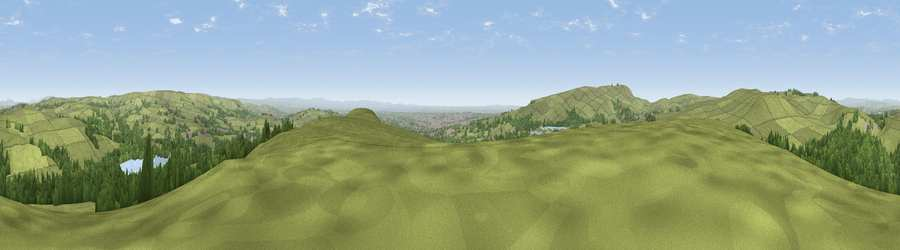

Viewpoint near Egerton
#7278 in England · top 10% of its area beats it · near EgertonThe view, rendered

A 360° render of this exact spot computed from the terrain model, tree cover and land cover — summer colours, afternoon light, calibrated against photographs of famous viewpoints. Real trees, hedges and buildings will differ in detail.
The panorama
Grey silhouette: terrain skyline in each direction (720 bearings, Earth curvature and refraction included). Dashed green: skyline with trees (+15 m) and buildings (+8 m) as obstacles. Blue strip: how far the ground is visible on each bearing.
Where the view opens
Wedge length = distance to the farthest visible ground on that bearing (vegetation-aware). Rings at 10, 25 and 50 km.
What fills the view
69% grassland · 23% woodland · 4% water · 4% built-up
Angular shares of the visible panorama (visual magnitude), not map area. Landscape diversity 0.37 (0–1 Shannon).
Key numbers
More beautiful places nearby
The staircase of upgrades: each row has a higher view potential than everything closer. Driving times are estimates from straight-line distance, calibrated against real road routing — check an actual route before setting out.
| Place | Direction | Drive | Score |
|---|---|---|---|
| Viewpoint near Egerton | SE · 1 km | ~4 min | 69.9 |
| Viewpoint near Darwen | NW · 5 km | ~11 min | 72.7 |
| Darwen Hill | NNW · 6 km | ~12 min | 80.7 |
| White Brow | SW · 7 km | ~14 min | 82.9 |
| Warton Crag | NNW · 60 km | ~82 min | 83.2 |
| Viewpoint near Grange-over-Sands | NNW · 69 km | ~92 min | 83.4 |
| Viewpoint near Cartmel | NNW · 72 km | ~95 min | 87.0 |
| Viewpoint near Cartmel | NNW · 72 km | ~95 min | 87.2 |
53.64712, -2.44131 · source: screening · position refined by local search. Computed location — check access rights before visiting.